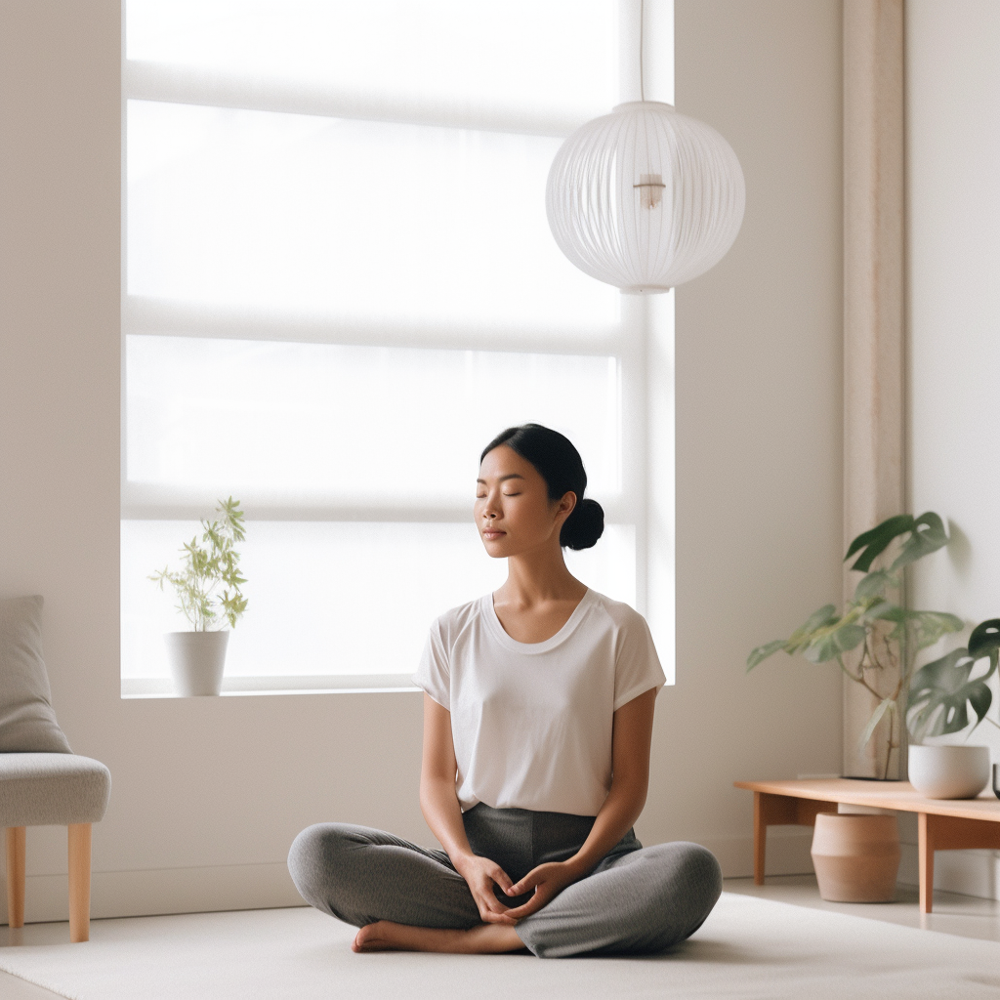

Let's meditate!
1. Calming Meditation for Shopping Addiction
2. Letting Go of Material Desires
3. Emergency Calm: Finding Balance in Urgency

Find a comfortable and quiet place to sit. Close your eyes and take a
deep breath in, then exhale slowly. Repeat this a few times, letting
go of any tension. Now, focus on your breath. Feel the air coming in
and going out. If your mind starts to wander, gently bring your
attention back to your breath. Imagine a peaceful place, like a calm
beach or a quiet forest. Picture yourself there, feeling relaxed and
at ease. Now, think about shopping and the rush it gives you. Notice
any sensations or thoughts that arise without judgment. It's okay to
feel whatever comes up. Visualize the things you've bought because of
your shopping addiction. See them fading away, becoming transparent
like bubbles and then disappearing.
Bring your attention back to
your breath. Inhale, exhale. Inhale, exhale. Repeat these words to
yourself: "I am more than my belongings. I find happiness within."
When
you're ready, slowly open your eyes. Take a moment to feel the
calmness you've created. Remember that you can return to this calm
place anytime you need. Gently stand up and continue with your day,
carrying this sense of calm and mindfulness with you.
Find a comfortable spot to sit quietly. Close your eyes, take a deep
breath in, and exhale slowly. Repeat this a few times, allowing your
body to relax. Shift your focus to your breath. Feel the rhythm of
each inhale and exhale. If your mind starts to wander, gently bring
your attention back to your breath.
Imagine you're walking into
an imaginary shop filled with items of all kinds. Take a moment to
observe the shelves and displays. As you look around, notice that
nothing seems to catch your interest. You pick up a few things,
examine them, and then put them back. There's a sense of detachment
from these objects. Pay attention to your feelings as you explore the
shop. Recognize any sense of restlessness or disappointment that
arises.
Return your focus to your breath. Inhale, exhale.
Inhale, exhale. Repeat these words to yourself: "My contentment comes
from within, not from things." Visualize yourself leaving the shop,
the door closing behind you. As you step away, you feel a lightness,
as if a burden has been lifted. Take a deep breath in, and as you
exhale, release any lingering attachment to material possessions.
When
you're ready, slowly open your eyes. Take a moment to appreciate the
calm and clarity you've created.
As you go about your day,
remember the experience of the imaginary shop. It's a reminder that
true contentment doesn't come from external things, but from the peace
you cultivate within.
Find a quiet spot and sit down. Close your eyes, take a deep breath
in, and exhale slowly. Do this a few times, letting go of tension.
Focus on your breath. Breathe in, breathe out. If thoughts pop up,
gently return to your breath. Imagine a stop sign in your mind. It's a
symbol of pause and reflection.As you face an urgent spending urge,
see that stop sign. Give yourself a moment to pause and breathe.Ask
yourself: "Do I truly need this? Will it bring lasting happiness?"
Imagine the urge fading like a passing cloud. Feel the calm return.
Say to yourself: "I control my choices. I choose balance."
Take a
final deep breath in, exhale slowly, and open your eyes. Stand up with
newfound clarity, carrying this pause and balance into your next
steps.